Tarjetas de Acción
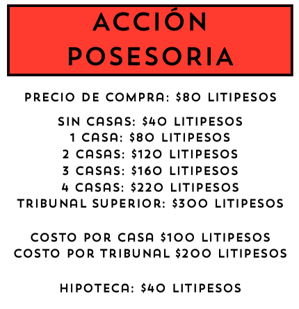
La acción para defender la posesión permite proteger un bien mueble o inmueble frente a un despojo ilegal, recuperar la posesión y pedir indemnización. Requiere demostrar la posesión legítima y el despojo con evidencias. Fundamento legal: artículos 27–30 del Código Nacional de Procedimientos Civiles y Familiares.
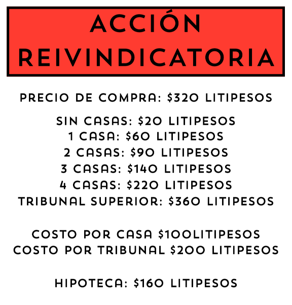
La reivindicación permite al propietario exigir la devolución de un bien en posesión de quien no es dueño, junto con frutos y accesorios. Propietario: derecho de usar y disponer del bien. Poseedor: quien lo controla. Fundamento: Art. 1, 16 y 27 Constitucionales; arts. 15 y 8 CNPCF; 905, 971 y 1396 CC Hidalgo; 899 y 1415 CC Federal.
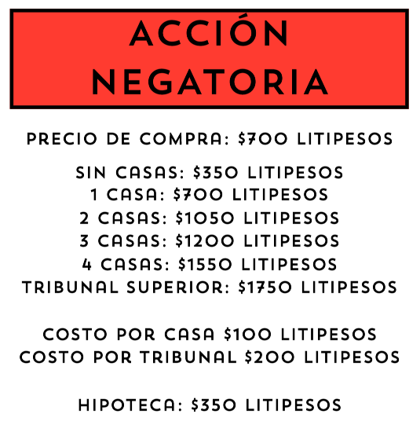
La acción negatoria permite al poseedor a título de dueño pedir una reducción de gravámenes sobre un inmueble. Se usa cuando terceros afectan la propiedad. Actor: El poseedor a título. Demandado: Quien afecta el inmueble. Objeto: Reclamar daños y perjuicios. Fundamento: Art. 21 del CNPCF.
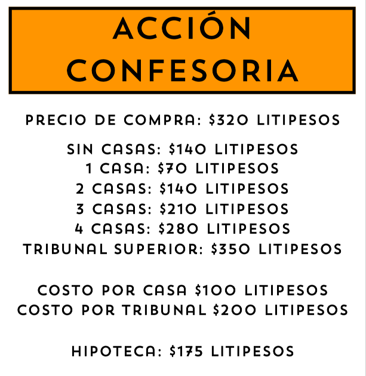
La acción confesoria es un medio judicial para reconocer y defender un derecho real, frente a quien lo niega o lo impide. El demandado debe dar reparo a la afectación y cubra daños. Actuación: Contra quien impide su ejercicio. Culminación: Puede ordenarse detener la conducta. Fundamento: Art. 1457 del Código Civil.
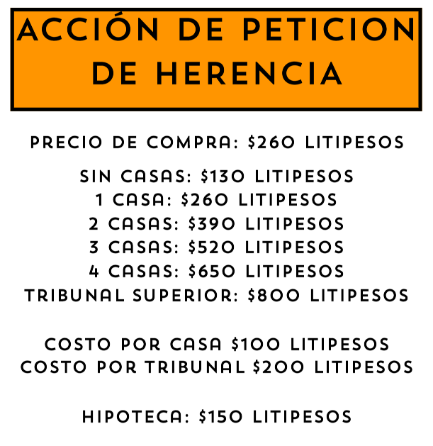
La acción herencia permite al heredero legítimo, reclamar su derecho contra quien posee los bienes. Heredero aparente: Quien ocupa los bienes sin derecho. Heredero real: Quien tiene el derecho conforme a la ley. Fundamento: Art. 1649 del Código Civil Federal y arts. 13 y 14 del Código de Procedimientos Civiles.
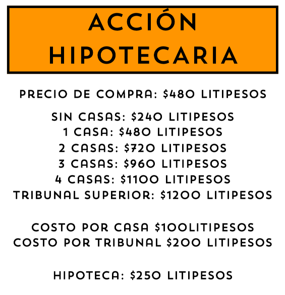
La acción hipotecaria permite al acreedor hipotecario pedir al juez el reconocimiento y ejecución de su derecho sobre el bien hipotecado. Características: El actor es el acreedor ; el demandado, el deudor. Objeto: Constituir o registrar la hipoteca, exigir el pago o prelación del crédito y reclamar frente a terceros.
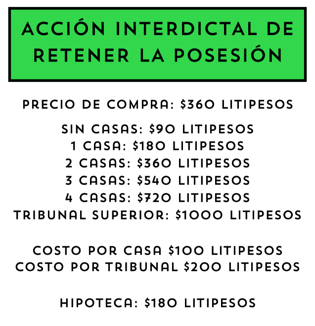
La acción protege a quien posee un inmueble y sufre una perturbación. Requisitos: Posesión actual, presentar la acción dentro del plazo legal y que el demandado no tenga mejor derecho. Protege a quien ya fue despojado de un inmueble, permitiendo que el juez le restituya la posesión. Sirve para recuperar un bien.
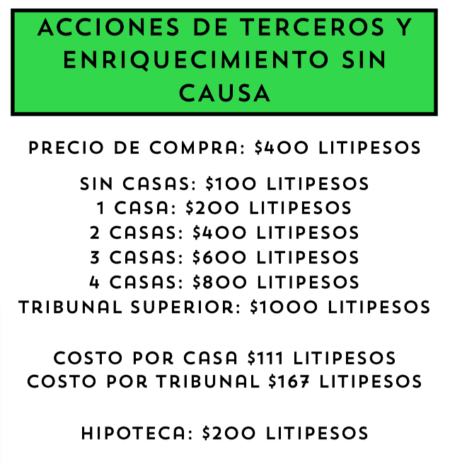
La acción de terceros permite a alguien ajeno al juicio defender un derecho propio y evitar perjuicios. Tipos: Dominio: se afirma ser dueño. Preferencia: se reclama un derecho preferente. Procede: antes del remate. El enriquecimiento ocurre cuando alguien se beneficia a costa de otro; su finalidad es devolver al afectado lo perdido.
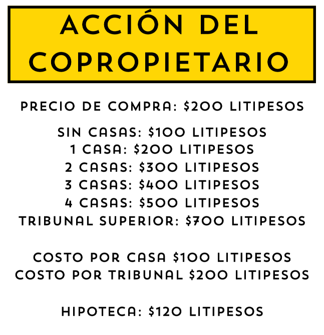
La acción de copropiedad es la facultad que tiene cada propietario de un mismo bien para actuar de manera individual o en conjunto par impulsar la actividad jurisdiccional. La acción de copropiedad se clasifica dentro de las acciones reales. Fundamentos legales: 938 del Código Civil Federal
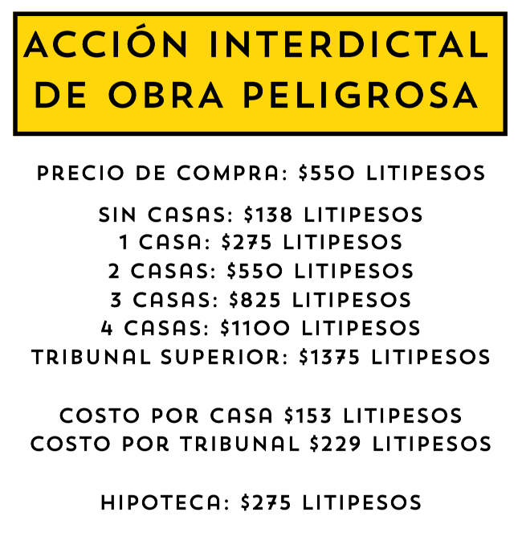
El interdicto de obra peligrosa procede en dos casos: 1. Cuando un poseedor cercano puede sufrir daños por la posible caída de una obra u objeto. 2. Cuando alguien con derecho de paso puede verse afectado. En ambos casos se busca que el juez ordene medidas urgentes para eliminar el riesgo.
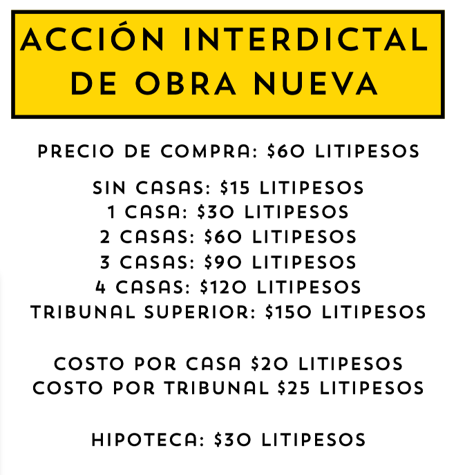
El interdicto de obra nueva busca detener una construcción que afecta la posesión, evitando que el daño se consuma. Requisitos: Que una obra cause o pueda causar perjuicio a la propiedad, posesión o derecho; y dicha obra no esté terminada, pudiendo suspenderse si su continuación provoca daño.
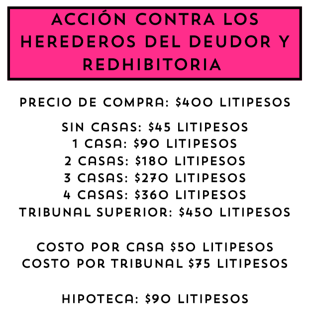
Los acreedores del difunto pueden cobrar sus deudas usando los bienes de la herencia, y los herederos responden, nunca con su propio patrimonio. La acción redhibitoria permite al comprador cancelar la compraventa cuando tiene vicios ocultos. Fundamento: Art. 2130 del Código Civil de Hidalgo.
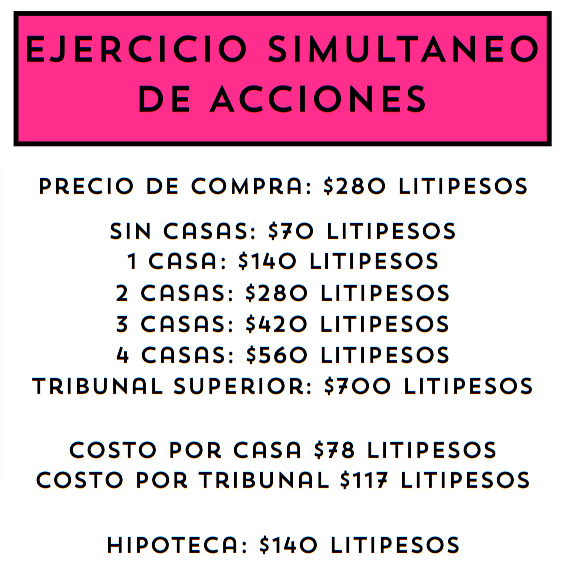
La acumulación de acciones permite reunir varias acciones en un juicio. Tipos: Originaria: Se incluyen desde la demanda inicial. Superviniente: Se unen procesos ya existentes. La prescripción permite adquirir bienes por el paso del tiempo. Prescripción genérica: aplica cuando la ley no fija un plazo.
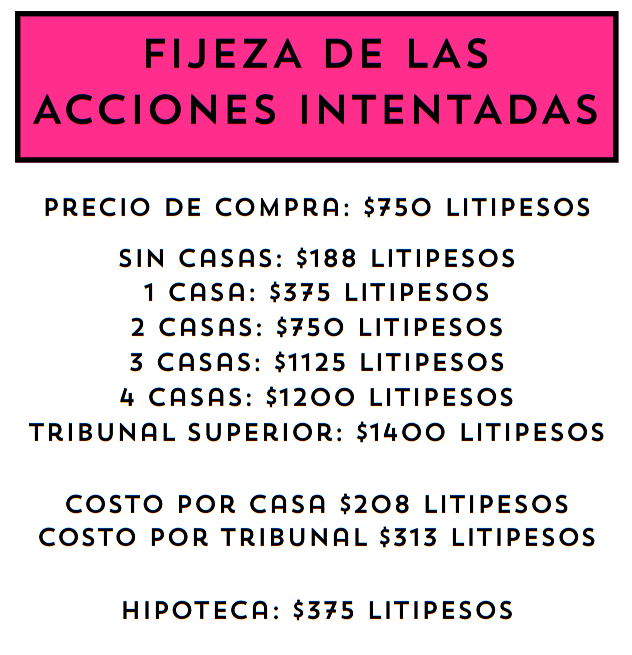
“Fijeza” implica firmeza, y “acciones intentadas” se refiere a actos legales ya iniciados. Una vez presentada la demanda y notificado el demandado, la acción adquiere fijeza, es decir, no puede cambiarse libremente en su objeto o pretensiones, garantizando seguridad jurídica durante el proceso.
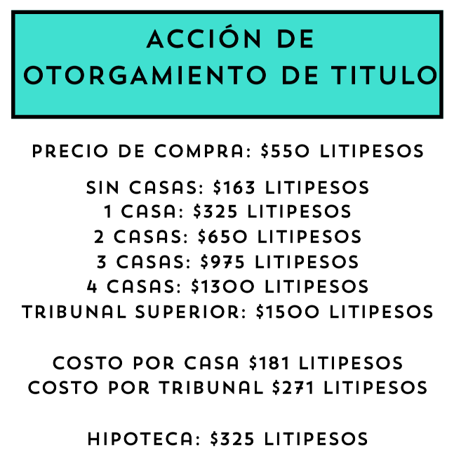
El Juicio de Otorgamiento permite al comprador demandar cuando el vendedor se niega a firmar la escritura. Su finalidad es obligar al demandado a otorgar la escritura. Para proceder, se requiere contrato de compraventa y comprobantes de pago. Finalidad: obtener el título legal del inmueble .
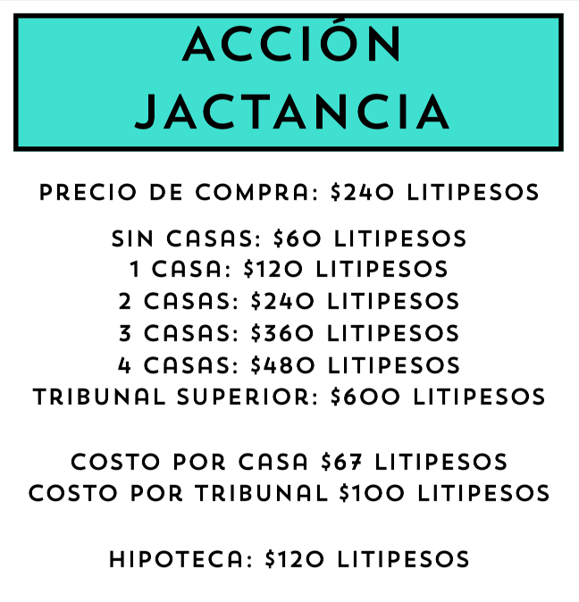
La acción jactancia procede contra quien presume tener un derecho sobre otro, para obligarlo a demostrarlo o guardar silencio. Busca evitar futuras perturbaciones. Solo es válida cuando existe un perjuicio material o moral.
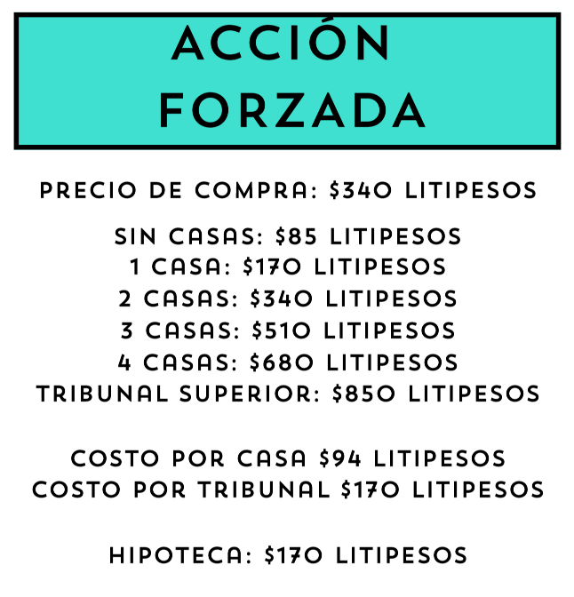
La ejecución forzosa es el procedimiento legal que obliga a cumplir una obligación o sentencia mediante embargo, desalojo o decomiso. Oposición: El deudor puede impugnarla dentro del plazo legal. Consecuencias: Embargo y subasta de bienes.
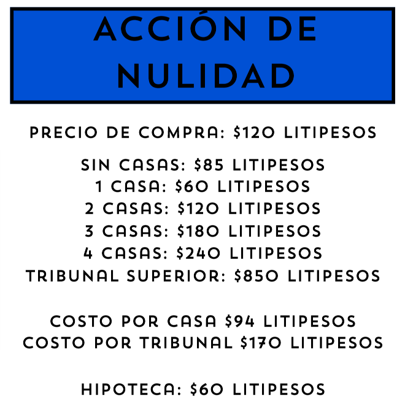
La acción de nulidad permite pedir que se declare inválido un acto jurídico que no cumple los requisitos legales. Su finalidad es evitar que actos con errores, vicios o fraudes produzcan efectos. Fundamento: arts. 2220–2225 del Código Civil de Hidalgo.
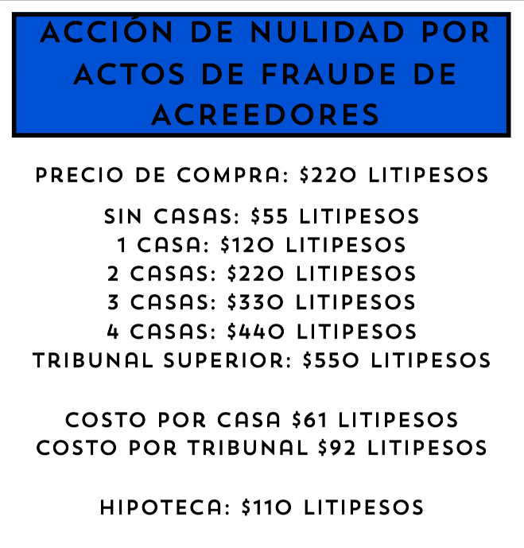
La acción pauliana permite al acreedor impugnar actos del deudor que, para evadir sus obligaciones, enajena bienes y provoca su propia insolvencia. Objetivo: conservar el patrimonio del deudor. Requisitos: Existencia de un crédito y ejercicio de la acción dentro de cuatro años.
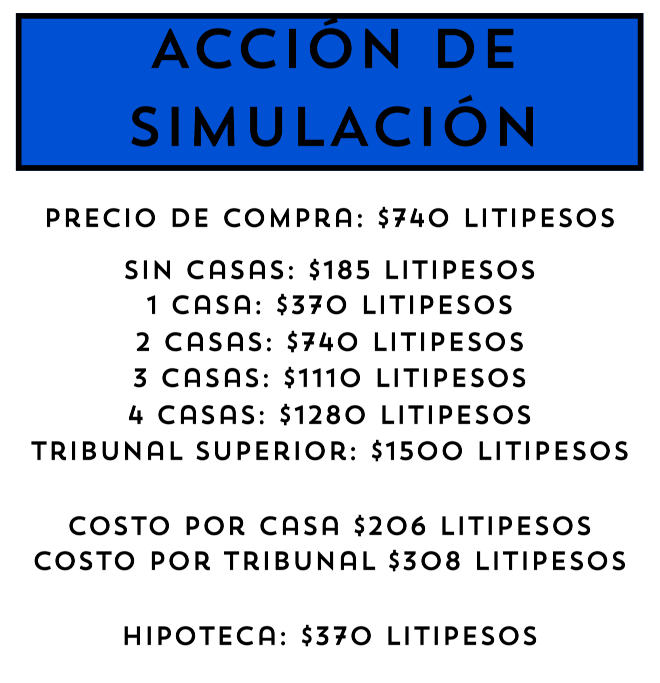
La acción de simulación busca evitar que el deudor oculte bienes mediante contratos falsos y defraude a sus acreedores. Finalidad: que el juez declare la simulación y la nulidad del acto, haciendo que los bienes regresen al patrimonio original.
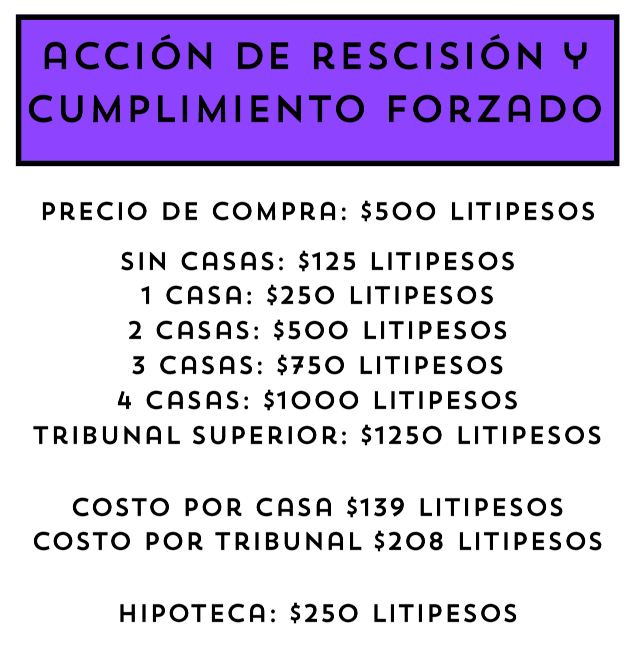
La acción de rescisión permite al acreedor pedir la terminación del contrato por incumplimiento. Procede cuando mantener el contrato ya no conviene. La acción de cumplimiento forzado busca que el juez obligue al deudor a cumplir exactamente lo pactado. Fundamento: arts. 1949–1951 CC. y CC.
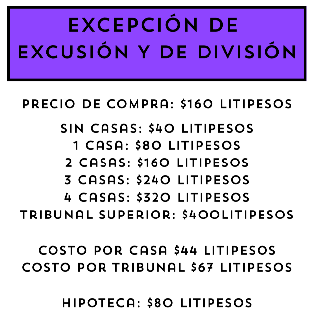
La excepción de excusión permite al fiador negarse a pagar hasta que se hayan agotado primero los bienes del deudor principal. La excepción de división aplica cuando hay varios deudores mancomunados: no se puede exigir a uno el total de la deuda, solo la parte que le corresponde (art. 1984).
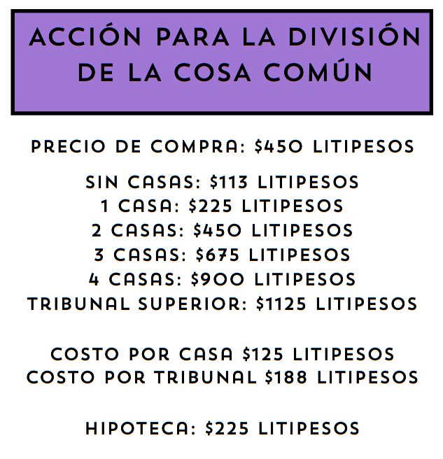
La división de la cosa común es el proceso para repartir un bien en copropiedad, de modo que cada copropietario obtenga su parte física o en dinero. Procede cuando los copropietarios quieren disolver la copropiedad de común acuerdo o, por la muerte de un copropietario, los herederos solicitan la división.
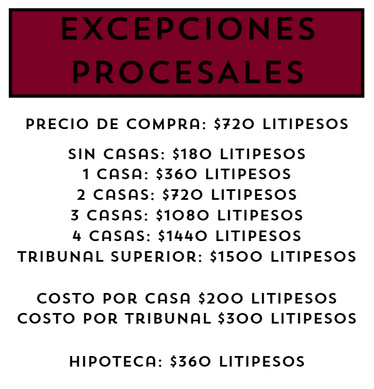
Personalidad jurídica: Aptitud para ser sujeto de derechos y obligaciones, dentro de lo legal. Presupuesto procesal que debe revisar de oficio el juez. La tienen personas físicas y morales. Atributos: Capacidad, nombre, patrimonio, domicilio, nacionalidad, estado civil (solo en físicas).
La falta de personalidad se basa en que una parte no tiene las cualidades necesarias para intervenir en un juicio. La falta de capacidad implica no poder adquirir derechos u obligaciones. Implicaciones: puede declararse inexistente la relación procesal.
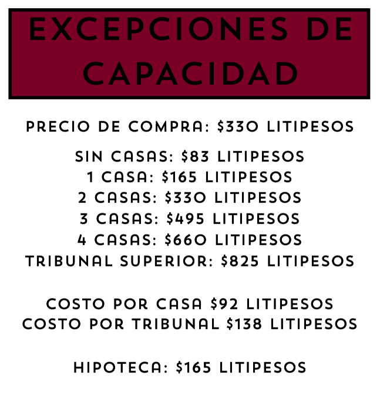
Las excepciones de capacidad se aplican cuando una persona no tiene la condición jurídica necesaria para actuar en un proceso, lo que afecta la validez de sus actos. La excepción procede cuando una parte carece de capacidad legal y puede causar la nulidad de sus actos.
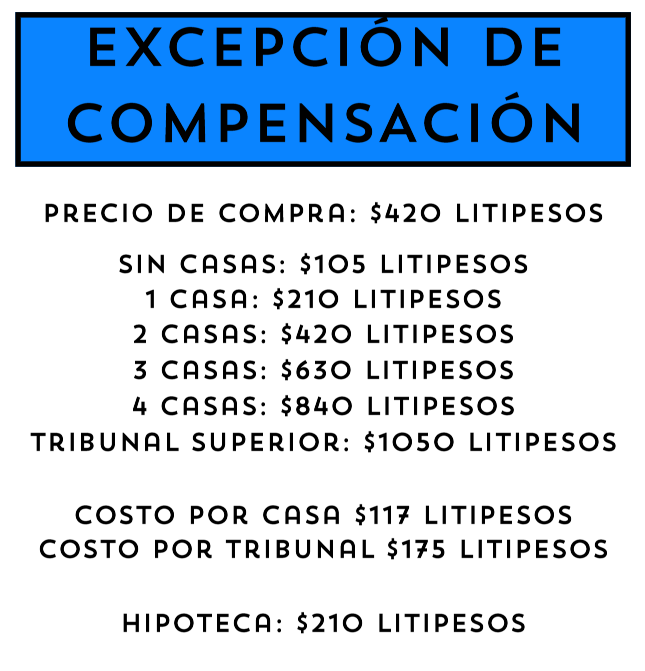
La excepción de compensación permite extinguir deudas recíprocas entre dos personas. Funciona cuando ambas partes son deudoras y acreedoras. Requisitos: que las deudas sean recíprocas, líquidas, exigibles y de la misma especie o bienes.
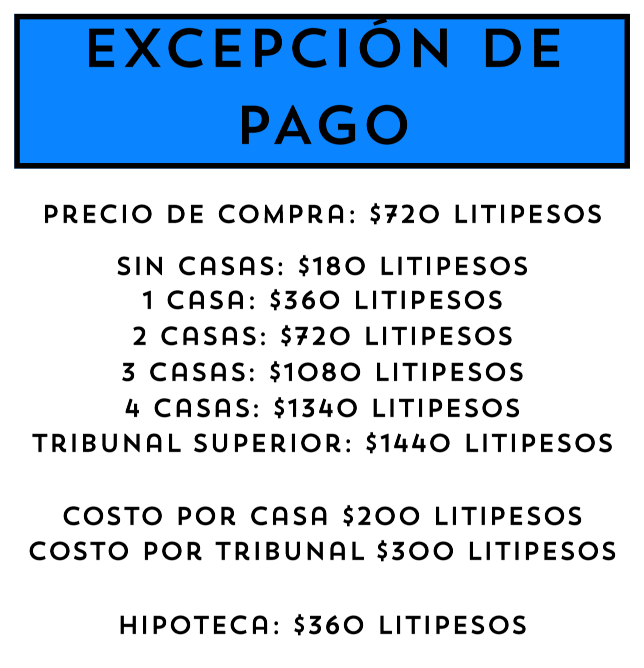
La excepción de pago permite al deudor defenderse alegando que ya pagó o tiene una razón válida para no hacerlo, especialmente en un juicio ejecutivo. Implica reducir la deuda para facilitar su cumplimiento.
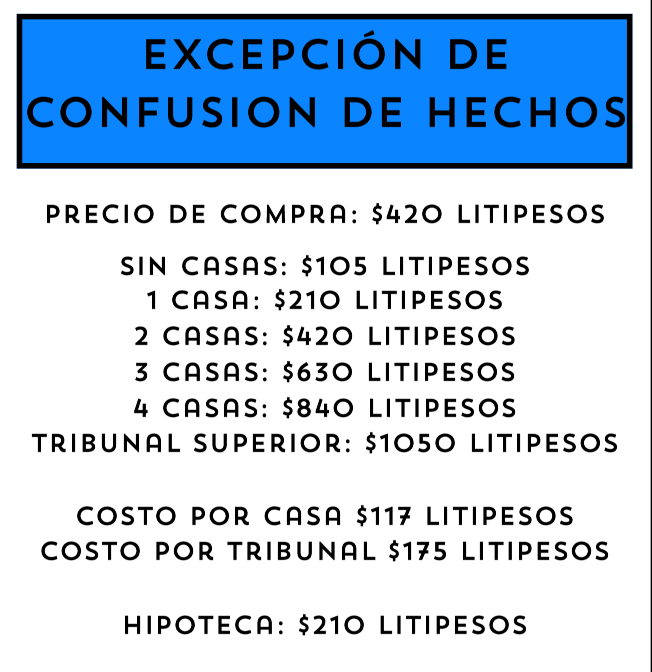
La confusión ocurre cuando demandante y demandado coinciden como acreedor y deudor respecto de la misma obligación. La excepción se usa para demostrar que ya no existe obligación exigible. Su finalidad es extinguir la acción; debe plantearse oportunamente .
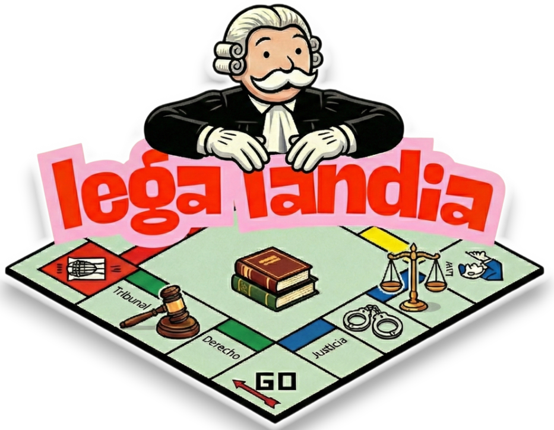
Legalandia